Base¶
本下拉栏中调节内容为基础内容，任何使用Pixie16获取系统的人员都应该熟悉并掌握其调节技巧。
Base Setup¶
控制界面¶
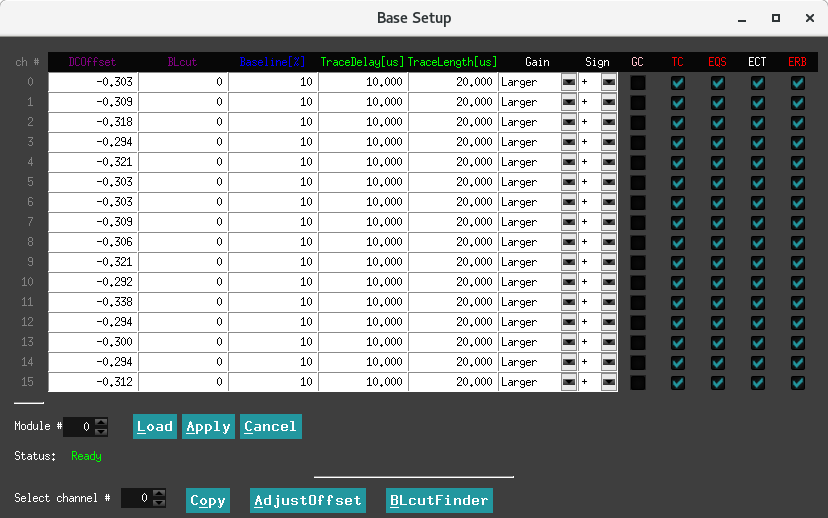界面下方的 Status 显示为 绿色的 Ready 时表示可操作该界面，否则需要等待。
界面中 Module 后面的参数用来选择调节的采集卡模块， Load 表示读取该采集卡的参数数值， Apply 表示将界面中的数值写入采集卡。
界面下方的 Select Channel 后面的参数表示选择用来将界面上该通道的参数复制给其它通道，点击后面 Copy 完成复制，然后需要 Apply 来将参数写入采集卡。
Base Setup 页面控制每个通道的模拟增益，便置和极性。单击顶部控制栏中 Monitor 的 Trace＆Baseline 可以查看从 ADC 读取的信号，同时调整这些参数。该页面可以显示模块的一个或全部 16 个通道。您可以在 Hist＆XDT 页面中设置每个模块每个通道的采样间隔以捕获更长的时间帧。单击 Draw 以更新图形。
来自探测器的脉冲应落在 0 到 16383（例如 14位）的范围内，基线在 ~1638 处允许漂移和/或下冲，并且在上限处没有削波。如果存在削波，请调整增益和偏置，或单击 AdjustOffset 按钮让软件将 DC 偏置设置为适当的水平。
由于 FPGA 中的触发/滤波电路仅作用于正极性脉冲，因此负脉冲在输入 FPGA 处进行极性反转，并且 ADC 波形显示中显示的波形包括此可选的反转。因此，设置通道的极性，使得来自探测器的脉冲以正幅度（上升沿）出现。
在 Base Setup 选项卡中，您可以设置在列表模式运行中获取的波形的总跟踪长度和预触发跟踪延迟。
跟踪延迟(trace delay)不能长于跟踪长度(trace length)，并且对于每个 Pixie-16 通道，跟踪延迟和跟踪长度的最大值也有限制。
参数介绍¶
选项 Gain 为增益调节，用户可选择 Larger 或者 Small 档，具体每个采集卡这两档所对应的增益参数用户可自行测试或者咨询厂家。
选项 Sign 选择输入信号的极性，输入正信号选择 “+”，输入负信号则选择 “-“。
选项 GC 表示是否记录该通道数据，选择表示记录该通道数据，不选择表示不记录。
选项 ECT 选择表示开启CFD触发功能。否则，则采用快梯形的前沿甄别。
红色的 TC，EQS，ERB 用来选择输出哪些原始数据：
选项 TC 选择表示记录波形，此时 TraceDelay、TraceLength 生效，不选择则表示不记录波形。
选项 EQS 选择表示记录八个QDC的积分，不选择则不记录。
选项 ERB 选择表示记录能量梯形的三部分面积积分及梯形计算的基线数值。
绿色的 TraceDelay、TraceLength 为输出数据的点数，该参数除以采集卡的标称采样率即为波形实际输出数据点数：
TraceDelay 表示触发前的采集波形长度。
TraceLength 表示整个波形采集长度。
需要特别说明的是采用降频模式时，实际波形长度为 TraceDelay x 2^N / TraceLength x 2^N（N 为降频参数）
蓝色的 Baseline 用来调节基线位置，通过电压的补偿将基线调节到用户预期的位置：
Baseline 可调节范围为 0 - 100，表示波形基线落在满量程的位置百分比。例如垂直精度 14 bit 采集卡，该参数设置为 10 意味着降基线补偿调节到满量程 16384 道的 10% 左右即 1638 附近。
紫色的 DCOffset、BLcut 用户不需要修改，采用自动调节参数即可。本子菜单中修改了 Baseline、Gain、Sign 之后，需要按最下方的 AdjustOffset，之后再按 BLcutFinder 来自动调节这两个参数。
重要信息¶
注解
500 MHz 模块中的波形
对于500 MHz Pixie-16 模块，ADC 以 500 MHz 运行，但在 FPGA 中以 100 MHz 时钟记录波形，每 10 ns 间隔捕获 5 个 ADC 样本。 此外，从 FPGA 到板上外部 FIFO 的数据打包是一次传输两组 5 个 ADC 样本。 因此，波形长度应为 20 ns 的倍数，即 20 ns，40 ns，……例如，波形长度为 500 ns，波形延迟为 200 ns。
小技巧
好通道(Good channel)
只有标记为好的通道才会记录其事件。
此设置与通道自身触发的能力无关。
可以有一个触发通道，其数据被丢弃。
未标记为好的通道将不会自动进行偏置调整。
基线测量¶
当没有检测到脉冲时，Pixie-16 不断地进行基线测量，并且在脉冲高度重建期间保持从能量滤波器输出中减去基线平均值。与平均值相差超过 BaselineCut 值的基线测量将被拒绝，因为它们可能被低于触发阈值的小脉冲污染。
可以在 Trace＆Baseline 页面中查看每个通道的一系列基线测量值，在 BASELINE 面板中可以构建基线直方图，以验证基线切割(Baseline Cut)不会拒绝落入基线分布（理想情况下为高斯测量主峰值的测量。
通常，将基线切割(Baseline Cut)保持为默认值就足够了。
注意：由于基线计算考虑了指数衰减，因此如果基线显示中没有明显的脉冲，说明我们的设置满足了
a）正确设置了衰减时间
b）探测器脉冲是真正的指数衰减
基线百分比是用于自动偏置调整的参数。通过单击 AdjustOffses 按钮，将设置偏置，使 ADC 波形显示中看到的基线降至整个 ADC 范围的基线百分比（例如，对于 12 位 ADC 和基线百分比=基线的10％） 落在 ADC 整个量程4096个bin中的409个bin）。
Trigger Filter¶
控制界面¶

界面下方的 Status 显示为 绿色的 Ready 时表示可操作该界面，否则需要等待。底下按钮的操作同上。
参数 Rise Time 表示触发滤波上升时间。
参数 Flat Top 表示触发滤波平顶时间。
参数 Thresh. 表示阈值，该数值的设置是相对 fast filter 波形。
以下为参数的一般经验：
较长的触发滤波上升时间平均更多采样点，因此允许设置较低的阈值而不触发噪声。
通常应将阈值设置得尽可能低，略高于噪声水平。
较长的触发滤波平顶时间则可以更容易地触发缓慢的上升脉冲。
数字滤波¶
粒子能量探测器，包括诸如 Si（Li），HPGe，HgI2，CdTe 和 CZT 的固态探测器，通常采用电荷敏感前置放大器，如图所示。 这里，探测器 D 加偏置电压 V，并连接到 前置放大器A 的输入端，后者具有反馈电容 Cf 和反馈电阻 Rf。

通过滤波来降低测量中的噪声。传统的模拟电路使用微分电路和多个积分电路的组合将前置放大器输出步骤（如图（b）所示）转换为三角形或半高斯脉冲，其振幅（相对于基线）与 Vx 成比例，从而与伽马射线的能量成比例。
数字滤波从一个稍微不同的角度进行。这里的信号已经数字化，不再是连续的。相反，它是一个离散值字符串，如下图所示。图实际上只是上图（b）的一个子集，图中的信号由 Tektronix 544 TDS 数字示波器以 10 MSPS（每秒百万采样数）进行数字化。鉴于此数据集和某种算术处理，确定 Vx 的明显方法是对当前处理点之前的点取某种平均值，然后从当前处理点之后点的平均值中减去它。也就是说，如下图中所示，计算标记为“Length”的两个区域的平均值（“Gap”区域被省略，因为这里的信号变化很快），并将其差作为 Vx 的度量。因此，Vx 值可从以下方程式中得出：
其中，加权常数 Wi 的值决定计算的平均值类型。两组权重的值之和必须单独归一化。
不同数字信号处理算法之间的主要区别在于两个方面：使用哪组权重Wi以及如何选择区域来计算方程。
因此，例如，当靠近当前处理点的区域使用较大的权重值，而远离当前处理点的数据使用较小的值时，方程式生成“尖点样”滤波。当权重值为常量时，将获得三角形（如果间隙为零）或梯形滤波。尖点滤波背后的概念是，由于最接近台阶的点携带了关于其高度的最多信息，因此它们在平均过程中应该是最强大的权重。如何选择滤波长度会导致时间变化（长度随脉冲变化）或时间不变（所有脉冲的长度相同）滤波。传统的模拟滤波是不随时间变化的。时变滤波背后的概念是，由于伽马射线随机到达，它们之间的长度也相应变化，因此可以通过将长度设置为脉冲间隔来最大限度地利用可用信息。
原则上，最佳过滤是通过使用尖点样权重(cusp-like weights)和时变滤波长度选择来完成的。然而，这种方法存在严重的成本问题，无论是在实时评估所需的总计算能力方面，还是在以脉冲为基础生成（通常由存储系数）归一化 Wi 集所需的电路的复杂性方面。
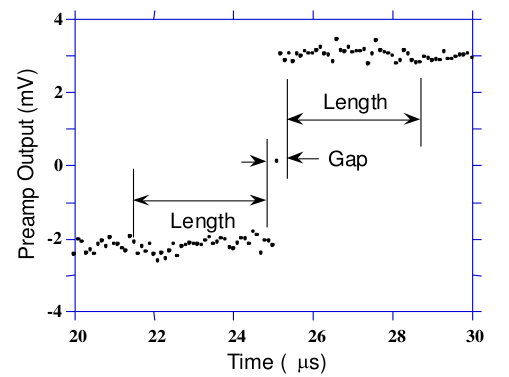Pixie-16 采用了不同的方法，因为它针对高速处理进行了优化。
它实现了一个固定长度的滤波算法，所有的 Wi 值均相等，实际上对每个新的信号值点 k 重新计算这个和。因此，所实现的方程是：
其中过滤长度为 L，间隙为 G。系数 L 乘以 \(V_{x,k}\) ，因为这里的权重总和未归一化。适应这一因素是微不足道的。
虽然这种关系很简单，但仍然非常有效。首先，这是三角形（或梯形，如果g≠0）滤波的数字等价物，这是模拟行业的高速处理标准。第二，理论上可以证明，如果信号中的噪声在阶跃上下为白噪声（即高斯分布），这通常是用于高信号率处理的短整形时间的情况，那么方程中的平均值实际上在最小二乘意义上给出 Vx 的最佳估计。当然，这就是为什么三角过滤在高速率下更受欢迎的原因。
原则上，带时变滤波器长度的三角形滤波既可以获得较高的分辨率，也可以获得更高的吞吐量，但其代价是电路要复杂得多，并且与速率相关的分辨率，这对于许多类型的精确分析来说是不可接受的。在实践中，XIA 的设计可以复制最佳模拟整形器的能量分辨率，同时使其吞吐量增加一倍，这为该方法的有效性提供了实验验证。
Energy¶
控制界面¶

界面下方的 Status 显示为 绿色的 Ready 时表示可操作该界面，否则需要等待。底下按钮的操作同上。
参数 Rise Time，请参考 Trapezoidal Filtering 部分
参数 Flat Top，请参考 Trapezoidal Filtering 部分
参数 Tau，请参考 Baselines and Preamp. Decay Times 部分
参数 filter range，请参考 Filter Range 部分
能量计算的最关键参数是信号衰减时间 Tau。在计算能量时，用来补偿先前脉冲的下降沿。您可以直接为每个通道输入 Tau，也可以单击“FindTau”，让软件自动确定衰减时间。
单击“Accept”将找到的值应用到通道。（如果近似值不变，软件找不到更好的值。）
在高计数率下，脉冲以较高的频率重叠。为了精确地计算这些脉冲的能量或脉冲高度，而不需要等到它们完全衰减回基线水平，Pixie-16 中计算当前脉冲的脉冲高度时采用的脉冲高度计算算法使用衰减时间来计算和消除之前脉冲重叠得指数衰减尾的贡献。
危险
单指数衰减常数
假设脉冲只有一个指数衰减常数。如果脉冲具有多个衰减常数，则可以使用起主要作用的脉冲衰减的衰减常数，但会降低脉冲高度计算的精度。
以下重要参数的一般经验如下：
能量滤波平顶时间应大于最长脉冲上升时间。
可以改变能量滤波的上升时间，以平衡分辨率和吞吐量。
一般来说，能量分辨率随着能量滤波的上升时间的增加而提高，直到当较长的滤波只在测量中增加更多的噪声时达到最佳值。
能量滤波区时间 TD 约为 \(2×(T_{rise}+T_{flat})\) ，泊松统计的最大吞吐量为1/(TD x e)。对于 HPGe 探测器，上升时间为 4-6 us，平顶 1 us 通常是合适的。
选择允许设置最佳能量滤波的上升时间的最小能量滤波补偿(Filter Range)。较大的滤波步长允许较长的滤波总长度之和，但会增加能量滤波的上升时间和平顶时间的可能值的梯度，并增加相对于脉冲上升沿锁定能量滤波输出的抖动。这通常只对非常快的脉冲很重要。
滤波步长¶
为了适应从数十纳秒到数十微秒各种上升时间的能量滤波器，滤波器在 FPGA 中具有不同的时钟抽取（滤波器范围）。 ADC 采样速率为 2 ns，4 ns 或 10 ns，具体取决于所使用的硬件版本，但在更高的时钟抽取中，几个 ADC 采样在进入能量滤波逻辑之前进行平均。 在过滤器范围 1 中，2 个样本被平均，在过滤器范围 2 中 4 个样本，依此类推。 由于上升时间和平顶的总和限制为 127 个抽取时钟周期，因此滤波时间粒度和滤波时间仅限于下表中列出的值。
 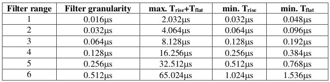
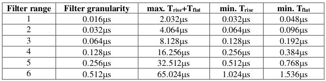
梯形滤波¶
从这一点开始，仅考虑梯形滤波，因为它是根据公式 \(LV_{x,k}=-\sum_{i=k-2L-G+1}^{k-L-G}V_{i}+\sum_{i=k-L+1}^{k}V_{i}\) 在 Pixie-16 模块中实现的。 将长度 L = 1 us 和 平顶 G = 0.4 us 的滤波器应用于伽马射线事件的结果如下图所示。 滤波器输出形状明显为梯形，上升时间等于 L，平顶等于 G，对称下降时间等于 L。基带宽度是滤波器降噪特性的一阶测量值，此时为 2L+G。

这在比较Pixie-16模块的噪声性能和模拟滤波放大器时提出了几个重点：
首先，半高斯滤波器通常由成形时间指定。 - 它们的上升时间通常是这以时间的两倍，并且它们的脉冲不对称，因此基带宽度约为成形时间的 5.6 倍或上升时间的 2.8 倍。
因此，半高斯滤波器通常具有比具有相同上升时间的三角滤波器稍好的能量分辨率，因为它具有更长的滤波时间。 - 这通常适用于通过将三角形上升时间拉伸一点来提供三角和半高斯滤波的放大器，因此真正的三角形上升时间通常是所选半高斯上升时间的 1.2 倍。 - 当其能量分辨率与具有相同标称上升时间的数字系统相比时，这也为模拟系统带来明显的优势。
数字形梯形脉冲的一个重要特征是在基带宽度 2L+G 时极其尖锐地终止。 这可以与模拟滤波脉冲进行比较，模拟滤波脉冲其尾部可能持续高达上升时间的 40％，这是由于模拟滤波器的有限带宽引起的现象。 从下面可以看出，这种尖锐的终止使数字滤波器在无堆积吞吐量方面具有明确的速率优势。
基线与前放衰减时间¶
图中显示了较长时间间隔内的事件以及当没有伽马射线脉冲时滤波器如何处理区域中的前置放大器噪声。
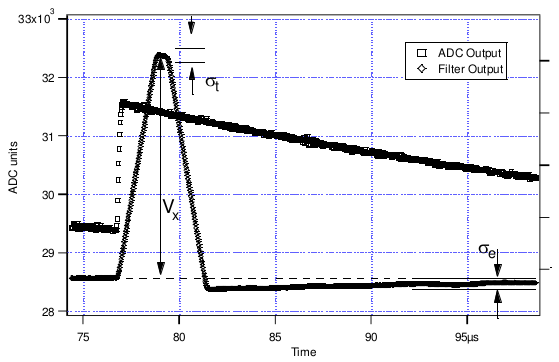可以看出，滤波器的效果是减小波动的幅度并降低它们的高频含量。 该区域称为基线，因为它建立了要测量伽马射线峰值幅度 Vx 的参考电平。 基线的波动具有标准偏差 \(\sigma_e\) ，其被称为系统的电子学噪声，该数字取决于所使用的滤波器的上升时间。 在这种噪声的基础上，伽马射线峰值会产生额外的噪声项，即 Fano 噪声，这是由于伽马射线在探测器中被吸收时产生的电荷量 Qx 的统计涨落引起的。 此 Fano 噪声 \(\sigma_f\) 与电子噪声偶和，因此测量 Vx 时的总噪声 \(\sigma_t\) 来自：
Fano 噪声仅是探测器材料的特性。 另一方面，电子学噪声可能来自前置放大器和放大器。然而，当前置放大器和放大器设计良好且匹配良好时，放大器的噪声贡献基本上可以忽略不计。 然而，在数字脉冲处理器的混合模拟-数字环境中实现这一点是一项非常重要的任务。
使用 RC 型前置放大器时，前置放大器的斜率很少为零。 每一步都以指数方式衰减回前置放大器的 DC 电平。 在这种衰减过程中，基线显然不是零。 这可以在上图中看到，其中脉冲之后指数衰减期间的滤波器输出低于初始水平。 另外请注意一点，平顶区域向下倾斜。
使用衰减常数 \(\tau\) 可以将基线映射回 DC 级别。这允许精确测定伽马射线能量，即使脉冲位于前一个脉冲的下降斜率上。作为前置放大器的一个特征， \(\tau\) 的值必须由用户和获取程序确定并设置到模块中。
堆积检测¶
如上所述，目标是为检测到的每一条伽马射线捕获 Vx 值，并使用这些值构建一个能谱。
注解
此过程在数字和模拟系统之间也存在显着差异。在模拟系统中，峰值必须“捕获”到模拟存储设备（通常是电容器）中，并“保持”直到数字化为止。然后，该数字值用于更新存储位置以构建所需的能谱。在此模数转换过程中，系统对其它事件无效，这会严重降低系统吞吐量。即使是单通道分析仪系统也会在此阶段引入显著的死时间，因为它们必须等待一段时间（通常为几微秒）才能确定是否满足窗口条件。
数字系统在这方面效率更高，因为滤波器输出的值已经是数字值。所需要的只是获取滤波器加和数值，重建能量 Vx，并将其添加到能谱中。在 Pixie-16 中，滤波器加和数值在 FPGA 中不断更新，并被捕获到事件缓冲器中。重建能量并增加能谱由 DSP 完成，因此 FPGA 可以立即采集新数据（除非缓冲区已满）。这是数字系统中增强吞吐量的重要来源。
Pixie-16 模块中的峰值检测和采样如下图所示进行处理。 图中实现了两个梯形滤波器，快速滤波器和慢速滤波器。 快速滤波器用于检测伽马射线的到达，慢速滤波器用于测量 Vx，在较长的滤波器上升时间内降低噪声。 快速滤波器的滤波器长度 Lf = 0.1 us，间隙 Gf = 0.1 us。 慢滤波器的 Ls = 1.2 us，Gs = 0.35 us。
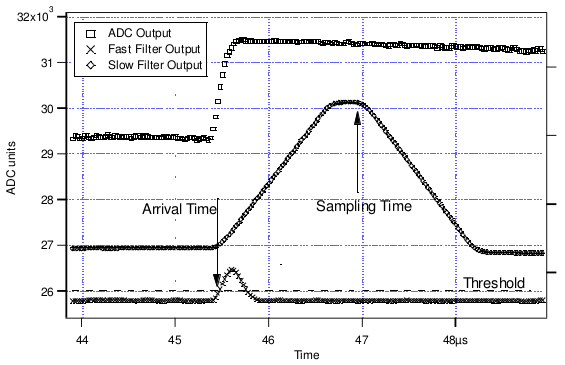通过将快速滤波器输出与用户设置的数字常数 THRESHOLD 进行数字比较来检测伽马射线步进（在前置放大器输出中）的到达。 越过阈值则开始延迟线等待 PEAKSAMP 个时钟周期，到达适当的时间来采样慢速滤波器的值。 由于数字滤波过程是确定性的，PEAKSAMP 仅取决于快速和慢速滤波器常数的值。
在 PEAKSAMP 之后捕获的慢滤波器值则是慢速数字滤波器对 Vx 的估计。 使用延迟线允许甚至在 PEAKSAMP 间隔内对多个脉冲进行采样（尽管滤波器值本身不是单个脉冲高度的正确表示）。
捕获的值 Vx 将仅是相关伽马射线能量的有效测量，条件是滤波后的脉冲在时间上与其前一个和后一个相邻脉冲足够好地分开，使得它们的峰值幅度不会因梯形滤波器的作用而失真。 也就是说，如果脉冲没有堆积。 通过参考下图可以理解相关问题，图中示出了通过各种间隔分开的3个伽马射线。 快速滤波器的滤波器长度 Lf = 0.1 us，间隙 Gf = 0.1 us。 慢滤波器的 Ls = 1.2 us，Gs = 0.35 us。
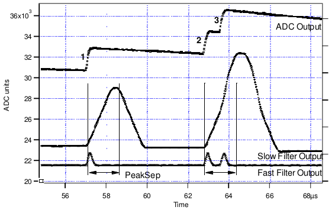由于梯形滤波器是线性滤波器，因此其对一系列脉冲的输出是其系列中各个成员的输出的线性和。 当一个脉冲的上升沿位于其邻居的峰值（特别是采样点）之下时，发生堆积。因此，在图中，峰1和2被充分分离，使得峰2的前沿在脉冲1的峰值之后下降。因为梯形滤波器函数是对称的，这也意味着脉冲1的后沿也不会落在脉冲2的峰中。为此，两个脉冲必须至少间隔 L+G。 因此，在本示例中看到峰值2和3，其间隔小于 1.0 us，具有1.2 us 的上升时间。
这导致了一个重要的观点：脉冲是否遭受缓慢的堆积主要取决于所使用的过滤器的上升时间。 在给定的平均信号速率下发生的堆积量将随着上升时间的增加而增加。
由于快速滤波器上升时间仅为 0.1 us，因此这些伽马射线脉冲不会在快速滤波器通道中堆积。 因此，Pixie-16 模块可以通过在脉冲到达时间之后测量间隔 PEAKSEP 的快速滤波器来测试慢速通道堆积。 如果在该间隔中没有检测到第二个脉冲，则没有后沿堆积并且脉冲可以用于采集。 PEAKSEP 通常设置为接近 L+G+1 的值。 脉冲1通过此测试，如上图所示。 然而，脉冲2未通过 PEAKSEP 测试，因为脉冲3低于 1.0 us。 注意，通过梯形滤波器的对称性，如果脉冲2由于脉冲3而被拒绝，则脉冲3由于脉冲2而被类似地拒绝。
CFD¶

100 / 250 MHz 模块¶
以下 CFD 算法在 100 MHz（版本 B，C，D 和 F）和 250 MHz（版本 F）Pixie-16 模块的信号处理 FPGA 中实现。
假设数字化波形可以用数据序列 Trace[i] 表示，i = 0、1、2，…。首先，数字化波形的快速滤波器响应（FF）计算如下：
这里，FL 称为快速长度，FG 称为数字梯形滤波器的快速间隙。CFD 计算如下：
其中 D 称为 CFD 延迟长度，而 w 称为 CFD 缩放因子（w = 0、1，…，7）。
CFD 过零点由 \(CFD[i]\geq 0\) 和 \(CFD[i+1]<0\) 来确定。时间戳被标记在跟踪点 \(i\) ，分数时间 \(f\) 由过零点前后两个 CFD 响应幅度之比得出。
其中 CFDout1 是过零点之前的 CFD 响应幅度，CFDout2 是过零点之后的 CFD 响应幅度（分母中使用减法，因为 CFDout2 为负数）。 Pixie-16 DSP 按以下方式计算 CFD 最终值，并将其存储在输出数据流中以进行在线或离线分析。
其中 N 是比例因子，分别对应于 100 MHz 模块的 32768 和对应于 250 MHz 模块的 16384。
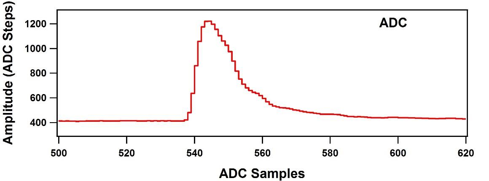 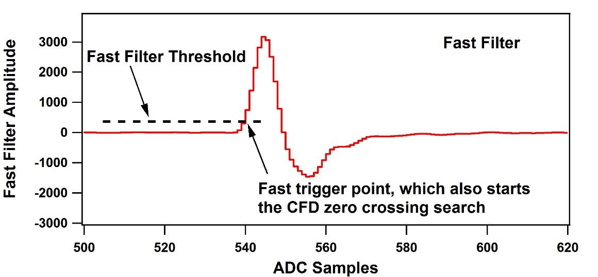 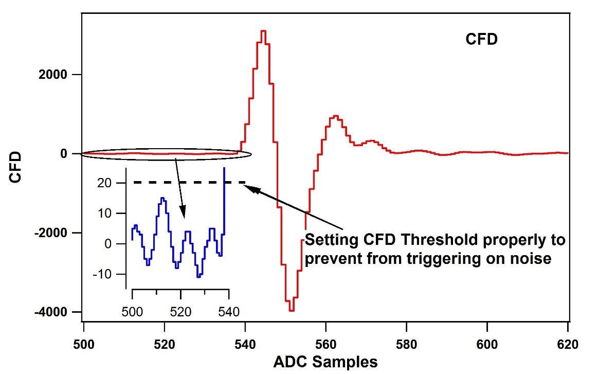上图分别显示了原始采集波形，其快速滤波器响应和 CFD 响应。
最上图显示了原始 ADC 采集波形。 在使用公式 \(FF[i]\) 计算原始 ADC 采集波形上的快速滤波器响应之后，将快速滤波器响应与快速滤波器阈值进行比较，如中间图所示。 快速滤波器响应超过快速滤波器阈值的 ADC 采样称为快速触发点，它也开始搜索 CFD 过零点。
CFD 响应是使用公式 \(CFD[i+D]\) 计算的，并显示在上面最后一张图中（对于固件中的实际实现，快速滤波器响应 FF 在用于计算 CFD 响应之前会稍有延迟。 在快速触发后有足够数量的 CFD 响应点来寻找过零点）。 为了防止实际触发之前 CFD 响应中的噪声导致 CFD 触发过早，使用称为 CFD 阈值的 DSP 参数来抑制那些由噪声引起的过零点。 但是，如果在快速触发后的某个时间段内（通常为32个时钟周期）找不到过零点（例如，由于不必要的高阈值），则会发出强制 CFD 触发，并在事件标头中设置标志来表示此事件记录的 CFD 时间是无效的。
但是，事件将仍然具有有效的时间戳记，当快速过滤器超过触发阈值时，该时间戳将由快速过滤器触发器锁存。 前述的 CFD 参数对应于以下 DSP 参数。
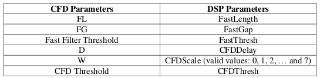注解
250 MHz
在 250 MHz Pixie-16 模块中，事件时间戳以 125 MHz 时钟滴答计数，即 8 ns 间隔进行计数，并且也以 8 ns 间隔捕获两个连续的 250 MHz ADC 样本。
CFD 触发也以 125 MHz 的频率运行，但是 CFD 过零点仍报告为两个相邻的 250 MHz ADC 采样之间的分数时间，由 FPGA 在一个 125 MHz 时钟周期内对其进行处理。
但是，CFD 过零点可能处于捕获的 250 MHz ADC 波形的奇数或偶数时钟周期中。
因此，固件在输出数据流中输出“CFD trigger source”位，以指示 CFD 过零点是处于捕获的 250 MHz ADC 波形的奇数还是偶数时钟周期中。
注解
100 MHz
在100 MHz Pixie-16模块中，事件时间戳，CFD 触发和 ADC 波形捕获都使用相同的 100 MHz 时钟执行。 因此，无需报告 100 MHz Pixie-16 模块的“CFD trigger source”。
500 MHz 模块¶
上一节中讨论的针对 100 MHz 和 250 MHz Pixie-16 模块的 CFD 算法也可以采用以下格式编写：
其中 a(i) 是 ADC 跟踪数据，k 是索引，w，B，D 和 L 是 CFD 参数。
在调整参数 w、B、D 和 L 的能力方面，在500 MHz Pixie-16 模块中实现的 CFD 算法与在 100 MHz 和 250 MHz Pixie-16 模块中实现的 CFD 算法相比是特殊的。
其原因是在 500 MHz 的 Pixie-16 模块中，以 500 MHz 的速度进入 FPGA 的 ADC 数据首先以 1:5 的比率减慢，换言之，FPGA 以 100 MHz 的速率，即每 10 ns 捕获 5 个 ADC 采样。然后，FPGA 通过首先建立 ADC 样本的和，然后计算延迟和非延迟和之间的差异，直到找到过零点，试图在该 10 ns 内找到任意两个相邻 2 ns ADC 样本之间的 CFD 触发点。然而，在 500 MHz 的 Pixie-16 模块中，FPGA 没有足够的资源来为 5 个 ADC 采样并行地构建可变延迟的和。因此，500 MHz 模块的 CFD 算法是使用一组固定 CFD 参数来实现的，如表 Fixed CFD Parameter Values for 500 MHz Pixie-16 Modules 。实验表明，这些固定参数对 LaBr3(Ce) 探测器的性能最好。

500 MHz Pixie-16 模块给出的 CFD 时间由两部分组成：在 5 个 ADC 样本内进行移位，以及在两个 ADC 样本之间发生 CFD 过零点的时间。 由于以下定义了 3-bit CFD trigger source[2:0]，因此报告了 5 个 ADC 采样中的移位。
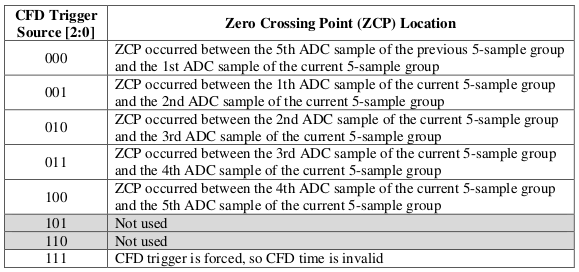CFD 分数时间如下：
QDC¶
控制界面¶

在 Pixie-16 模块的信号处理 FPGA 中为每个通道计算八个 QDC 积分，每个长度可以具有不同的长度，如果用户要求，则将这些积分写入列表模式输出数据流。
QDC 的积分起点从记录波形的点开始，该波形点比触发点早 Pre-trigger Trace Length 或 Trace Delay ，触发模式是 CFD 触发还是通道快速触发取决于 CFD 触发模式是否开启。
连续一个接一个地计算八个 QDC 积分，但它们并不重叠。八个间隔全部过去后，QDC 积分的记录结束。
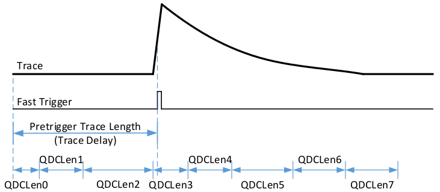Decimation¶
控制界面¶
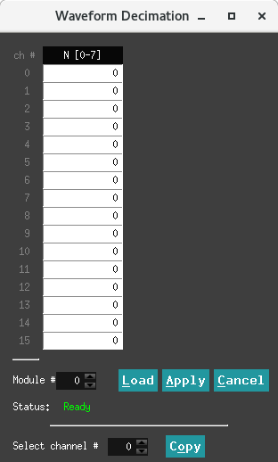在 PKU 固件中，对于 100 MHz 模块定制了波形降频输出。
在采集波形时候，增加了降频输出的功能，采取的策略为可选择 1，1/2，1/4，1/8，1/16，1/32，1/64，1/128（分别对应参数0-7）频率的输出，即多少个点保留一个点。保留的点是平均后的值。